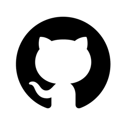

You said:
ChatGPT said:
Ho verificato i repository remoti e recuperato il task attivo.
La release da provare è in PoC 068 — ChatGPT Shared Link Export, al commit 810fbb0.
Il comando definitivo è export-offline.mjs. Dalla documentazione corrente risulta pubblicato, ma non ancora validato con un'esecuzione completa su un vero browser Chromium.
La prova su GitHub Actions servirà proprio a colmare questa lacuna, senza modificare il comportamento della release.
Esecuzione su GitHub Actions
GitHub Actions · Ubuntu Linux · Node.js 22 · Chromium
Ho pubblicato un workflow di validazione separato, senza modificare l'esportatore.
Commit di test:
b24b518Controlli previsti: test Node, export reale, 8 gruppi di fonti, 19 collegamenti, 8 citazioni singole, immagini locali e blocco degli script.
L'esportazione resta privata nel filesystem temporaneo del runner; il workflow registra soltanto il risultato della validazione.
La prima fase della VM Linux è passata: preparazione Node, installazione delle dipendenze e test dell'esportatore. Il job è ora entrato nella fase di esportazione della pagina ChatGPT reale.
Risultato: export riuscito
GitHub Actions Run #40954580470
Il workflow è terminato con successo, compresa l'esportazione reale tramite Chromium.
Gruppi di fonti ripristinati
8
Link nei gruppi
19
Citazioni singole
8
Immagini remote residue
0
Dimensione index.html
264.928 byte
Script originali
Bloccati dalla CSP
Test Node
8 superati
L'esecuzione dimostra che la release funziona end-to-end su questo runner Linux e su questo specifico link pubblico, senza ricorrere a dati simulati per la navigazione e la cattura.
Finalizzazione
Ho aggiornato la documentazione del PoC 068 e l'handoff attivo con i risultati effettivi della prova.
Repository PoC:
8e5064fKnowledge base / handoff:
dc83459Codice dell'esportatore: invariato rispetto alla release.
Consistency check: completato, modifiche limitate a workflow e documentazione.
Rimane una distinzione importante: il test conferma il funzionamento dell'intera pipeline sul campione utilizzato, ma non verifica visivamente l'HTML sul tuo vmdev né garantisce il funzionamento su qualsiasi conversazione ChatGPT.
La prova richiesta su una VM Linux di GitHub Actions è quindi completata con successo.
You said:
ChatGPT said:
Hai ragione, mi mancava quest'ultimo passaggio della chat precedente.
L'export era già stato testato realmente da te, e mi confermi che il risultato era perfetto.
Quindi la prova su GitHub Actions che abbiamo appena completato è una seconda validazione indipendente su Linux, non la prima conferma del funzionamento del prodotto.
La distinzione è importante: abbiamo una release già verificata da te sul campo e ora anche confermata su un runner GitHub.
Ho corretto anche i repository, così questa informazione non andrà persa al prossimo cambio di chat:
rumiai-dev-PoCs: commit3066b35rumiai-dev: commitd1bb52d
Ho mantenuto distinta la tua conferma del test reale dai risultati verificabili di GitHub Actions.
Non occorre ripetere il test su vmdev. Il PoC 068 ha già entrambe le conferme, e il codice della release rimane invariato.
You said:
ChatGPT said:
Sì, si può fare. E la prova che abbiamo appena eseguito dimostra proprio la fattibilità della parte più importante: usare una VM Linux di GitHub Actions per generare autonomamente un export ChatGPT.
L'obiettivo che proponi è questo:
Tu mi invii un link ChatGPT
Nella nostra conversazione
Io avvio un job GitHub Actions
Passando il link come richiesta di esportazione
VM Ubuntu + Chromium + PoC 068
Generazione di index.html, CSS, immagini e risorse locali
Archivio pubblicato su GitHub
Persistente, versionato e consultabile
Il passaggio da implementare non riguarda più il motore di export, che possiamo mantenere invariato. Riguarda soltanto l'orchestrazione e la pubblicazione del risultato.
Come realizzarlo concretamente
La soluzione che preferisco è utilizzare un repository GitHub dedicato agli export, inizialmente privato, separato da rumiai-dev-PoCs.
La parte interessante è che il collegamento GitHub già disponibile in questa chat mi permette di creare una GitHub Issue. Possiamo usare proprio questo meccanismo per avviare automaticamente il workflow, senza dover passare dall'interfaccia GitHub.
Funzionerebbe così:
Tu mi invii un URL
https://chatgpt.com/share/....Io creo una richiesta nel repository tramite una Issue.
GitHub Actions intercetta l'evento
issues: openede avvia la VM Linux.GitHub Docs+1Il workflow esegue
export-offline.mjs, verifica il risultato e lo salva in una directory dedicata.GitHub Actions pubblica i file nel repository tramite un nuovo commit, usando
GITHUB_TOKENcon permessocontents: write.GitHub Docs+1Il workflow registra nell'Issue l'esito e il collegamento all'archivio.
Il repository potrebbe contenere, per esempio:
chatgpt-exports/
exports/
0001/
index.html
assets/
metadata.json
0002/
0003/
Ogni esportazione sarebbe indipendente, versionata e conservata stabilmente. Non sarebbe necessario pubblicare i profili Chromium o i dati diagnostici intermedi.
Cosa manca
Il workflow esistente ha già dimostrato di saper eseguire l'export. Dobbiamo aggiungere il trigger tramite Issue, la gestione sicura delle richieste, la pubblicazione Git e il collegamento al risultato.
Non serve modificare il codice del prodotto. Dovremo però configurare i permessi del repository e verificare il ciclo completo con una nuova richiesta. L'accesso alle pagine rimarrà limitato ai link condivisi accessibili al browser; inoltre, la release attuale conserva i suoi vincoli sui layout supportati.
Ti proporrei di fare esattamente questo: creare un repository privato dedicato agli export e trasformarlo in un servizio che io possa utilizzare direttamente dalla chat ogni volta che mi fornisci un link. Il risultato rimarrebbe su GitHub anche dopo la fine della conversazione.
La scelta del repository privato è importante: anche i link condivisi pubblicamente possono contenere informazioni che non vuoi rendere permanentemente pubbliche attraverso un archivio Git.
You said:
ChatGPT said:
La struttura che proponi è chiara e possiamo adottarla:
rumiai-dev/
└── chats/
├── AI/
│ ├── 2026-10-09 Evoluzione degli LLM.html
│ └── 2026-10-23 Architettura RumiAI.html
├── Sistemi operativi/
│ └── 2026-10-28 m-boot.html
└── Ricerca/
└── 2026-10-11 Sistemi caotici.htmlL'orchestratore avrebbe tre informazioni di ingresso: URL della chat condivisa, argomento e titolo della chat. La data non dovrebbe essere richiesta all'utente.
C'è però una particolarità importante che ho verificato nel codice attuale: il PoC 068 produce una directory contenente index.html e risorse locali, anziché un unico file HTML indipendente. Per rispettare esattamente la tua struttura, servirà un passaggio di confezionamento che incorpori anche le risorse necessarie nell'HTML, mantenendo il risultato visivamente fedele.
La data di inizio della chat
Possiamo cercare di ricavarla automaticamente, ma il PoC 068 oggi non la espone.
Il codice contiene già un parser per i dati originali linear_conversation presenti nella pagina condivisa. La strada corretta è cercare il timestamp di creazione del primo messaggio dell'utente (per esempio create_time), non la data di pubblicazione del link o quella dell'export.
La modifica che suggerisco è minima:
Lasciare invariati il rendering e la logica dell'export approvato.
Aggiungere alla fase di acquisizione l'estrazione verificata del timestamp iniziale.
Restituire la data all'orchestratore come metadato.
Se la data originale non è disponibile o è ambigua, segnalare l'errore anziché inventarla.
Userei il fuso Europe/Rome per convertire il timestamp in YYYY-MM-DD.
Responsabilità dei componenti
Componente | Responsabilità |
|---|---|
PoC 068 | Esportare la chat e acquisire la data originale |
Orchestratore | Validare argomento e titolo, confezionare l'HTML unico e determinare il percorso |
GitHub Actions | Eseguire il processo e pubblicare con commit forward-only |
ChatGPT + GitHub Issue | Avviare la richiesta dalla nostra conversazione |
GitHub supporta l'avvio dei workflow tramite eventi sulle Issue e la pubblicazione tramite GITHUB_TOKEN con permessi di scrittura opportunamente configurati.
Resta un aspetto da considerare: rumiai-dev è pubblico, quindi gli HTML pubblicati saranno leggibili da chiunque. Inoltre la documentazione corrente disabilita il vecchio mirror GitHub delle chat; sarà necessario riallinearla alla tua nuova istruzione, mantenendo questi export come archivio non normativo.
Ho registrato il nuovo lavoro nell'handoff handoff/chatgpt-export-github-publication.md, commit 20d3f17. Non ho ancora modificato l'esportatore né creato il workflow di pubblicazione.
La soluzione che adotterei è quindi: piccola estensione per i metadati originali, orchestratore indipendente e nessuna modifica alla resa HTML già approvata.
You said:
ChatGPT said:
Sì, possiamo estendere l’esportatore per ricavare automaticamente anche il titolo originale della chat. La tua modifica alla struttura è inoltre un miglioramento: l’export già prodotto dal PoC 068 è costituito da index.html e risorse locali, quindi possiamo pubblicarlo senza alterare il rendering.
La struttura definitiva sarebbe:
rumiai-dev/
└── chats/
└── <argomento>/
└── 2026-10-09 Evoluzione degli LLM/
├── index.html
└── assets/
└── ...L’obiettivo diventa chiederti soltanto due parametri: il link condiviso e l’argomento.
Il titolo si può cercare nei metadati originali della pagina condivisa, mentre la data va ricavata dal timestamp di inizio della conversazione. Il codice attuale non estrae ancora questi due valori, quindi occorre una piccola estensione della fase di acquisizione, non del generatore HTML.
Non considererei però il titolo garantito finché non avremo verificato quale campo espone effettivamente la pagina condivisa: deve essere il titolo reale, non quello generico dell’archivio offline.
Come estrarrei il titolo
L’ordine di ricerca sarebbe:
Titolo originale nei dati della conversazione condivisa.
Metadati della pagina, come
og:titleo il titolo del documento, verificando che non siano generici.Se manca un titolo attendibile, errore controllato o possibilità di indicarlo manualmente.
OpenAI conferma che il titolo è presente nei metadati delle conversazioni condivise nell'esportazione dei dati dell'account; dobbiamo ancora verificare che sia accessibile anche nella pagina pubblica usata dal PoC.
L’esportatore potrebbe quindi restituire, oltre alla directory dell’archivio, due metadati: title e createdAt. L’orchestratore costruirebbe il percorso Git, controllando caratteri non validi e possibili collisioni con directory esistenti.
Ho aggiornato l’handoff della pubblicazione con la nuova struttura e con l’estrazione automatica del titolo: commit 950cf73. Nessuna modifica al codice dell’esportatore, per ora; il prossimo passaggio tecnico è verificare su una pagina condivisa reale che titolo e data siano entrambi ricavabili in modo affidabile.
You said:
ChatGPT said:
La parte centrale è implementata nei repository: l’archivio mantiene la struttura originale con index.html e risorse separate; titolo e data vengono estratti dai dati della conversazione, senza chiederteli.
La prova sui metadati reali è riuscita: per la chat campione risultano “Integrare Chat e Work” e 8 ottobre 2026, data del primo messaggio, non della condivisione. Anche i test dedicati all’estrazione e alla gestione delle directory sono passati su GitHub Actions.
Ho inoltre aggiunto in rumiai-dev un workflow che potrà ricevere richieste attraverso le GitHub Issue. Resta da verificare il ciclo completo Issue → export → commit, che non considero ancora validato.
Ho completato l’implementazione dell’automazione nei due repository.
Il flusso ora previsto è:
Mi fornisci un link ChatGPT condiviso e un argomento.
Creo una richiesta nel repository
rumiai-devtramite GitHub.GitHub Actions avvia Ubuntu e Chromium ed esegue il PoC 068.
L’esportatore ricava automaticamente titolo originale e data del primo messaggio.
Il workflow pubblica l’HTML e le risorse tramite un nuovo commit, senza sovrascrivere archivi esistenti.
La destinazione è esattamente quella concordata:
rumiai-dev/chats/
<argomento>/
<YYYY-MM-DD> <Titolo originale>/
index.html
assets/
...Stato delle verifiche
La lettura automatica dei metadati è stata confermata su una vera pagina condivisa. I test dedicati sono passati su GitHub Actions.
Una prima prova integrata ha individuato un conflitto fra l’acquisizione dell’HTML originale e il trattamento delle risorse CSS. Ho corretto il problema e aggiunto un test di regressione, che è passato. Al momento dell’ultima verifica, la nuova esecuzione completa con Chromium risultava ancora in corso; quindi non ne dichiaro anticipatamente il successo.
Puoi vedere il workflow di pubblicazione in rumiai-dev e la prova integrata su GitHub Actions.
Non ho ancora pubblicato conversazioni nel repository pubblico. Per il primo export effettivo mi basterà che tu mi dia il link e l’argomento: non serviranno né titolo né data. Il primo ciclo completo richiesta → Actions → commit resta da verificare.
You said:
argomento:"m-context" https://chatgpt.com/share/6ae46210-ceac-83eb-bf52-09b707731aff
ChatGPT said:
Avvio l’export della chat condivisa nell’argomento m-context. Prima verifico lo stato corrente dei repository e del workflow, poi creo la richiesta GitHub e controllo che l’archivio venga realmente pubblicato in rumiai-dev/chats/m-context/.

Analizzati repository, workflow, issue e log GitHub fallitiHo recuperato l’esito della prova integrata precedente: l’export Chromium con estrazione automatica di titolo e data è riuscito. Il workflow di test risultava fallito solo in un passaggio successivo che tentava di aggiornare un report nel repository PoC; la generazione dell’archivio era già completata correttamente. Posso quindi procedere con la richiesta m-context sul workflow di pubblicazione.
La richiesta è stata autorizzata correttamente, i due repository sono stati scaricati dal runner e i test preliminari sono passati. Chromium sta ora eseguendo l’export effettivo della chat m-context; il commit non è ancora stato effettuato.
L’export è ancora nella fase Chromium. È la parte più lunga del processo, perché il PoC acquisisce e verifica separatamente i riferimenti e le risorse. Continuo a controllare l’esito: la pubblicazione avverrà soltanto dopo il superamento dei controlli.
I controlli iniziali sono tutti verdi; il job è ancora attivo e non registra errori. Lascio che completi le verifiche del PoC prima di considerare pubblicabile il risultato.
Il job non è bloccato nei passaggi di preparazione: è sempre nel processo di acquisizione della conversazione. Sto aspettando un esito verificabile prima di fornire il percorso finale su GitHub.
L’esecuzione è ancora attiva. Ho anche verificato che la richiesta GitHub è stata creata con il tuo account, quindi supera il controllo di autorizzazione previsto dal workflow. Finché l’export non termina, il repository chats/m-context non viene modificato.
Il job sta ancora acquisendo la chat e non ha raggiunto il passaggio di commit. Per questo non ti indico ancora un file di destinazione: data e titolo saranno disponibili solo dopo che il processo avrà superato tutti i controlli.
La chat m-context sta richiedendo più acquisizioni del campione usato per i test; il workflow è comunque ancora attivo nella fase prevista. Non è stato pubblicato nessun archivio incompleto.
Esamino il motivo del rifiuto nel codice di verifica delle citazioni. Se si tratta di un problema recuperabile dell’acquisizione, proverò a correggerlo senza indebolire le garanzie sui link; se invece la chat usa una struttura non ancora supportata, lo registrerò esplicitamente.
Ho avviato una diagnosi mirata su GitHub Actions che misura, senza esporre URL o contenuti della chat, quanti riferimenti vengono effettivamente verificati e quali operazioni sui riquadri delle fonti falliscono. Questo permette di distinguere una limitazione della chat da un difetto riproducibile nell’automazione.
La prima diagnosi non ha prodotto dati utili: Chromium ha incontrato il caso di pagina non ancora pronta (exit 3), già noto al PoC. Sto applicando alla diagnosi lo stesso tentativo aggiuntivo con un profilo isolato che l’esportatore usa normalmente; non è una modifica alle regole di verifica dei link.
La seconda diagnosi sta acquisendo la pagina con il retry previsto. Il risultato che cerco è il conteggio delle schede di fonte effettivamente verificabili, non i loro indirizzi: così posso capire se mancano pochi collegamenti recuperabili oppure se questo export richiede un’estensione sostanziale del PoC.
Al momento la diagnosi non ha ancora concluso il ciclo Chromium. L’export richiesto rimane non pubblicato; la causa iniziale resta la mancanza di destinazioni HTTPS verificate per uno o più gruppi +N. Non intendo sostituire quelle destinazioni con link dedotti.
Ho già isolato il primo blocco: la richiesta e il workflow GitHub funzionano, ma l’esportatore specifico per le citazioni non riesce a completare le prove su questa conversazione. L’indagine supplementare serve a capire se si può recuperare senza compromettere la fedeltà dell’archivio.
Ho creato la richiesta di export per l’argomento m-context:
GitHub ha ricevuto la richiesta e ha avviato il workflow di pubblicazione. Il titolo e la data della chat verranno ricavati automaticamente; non ho inserito valori manuali.
L’esecuzione GitHub Actions è terminata, ma l’archivio m-context non è stato pubblicato.
Il PoC 068 ha rifiutato l’export perché non è riuscito a verificare tutte le destinazioni HTTPS di alcuni gruppi di citazioni (+N). I controlli di sicurezza hanno funzionato come previsto: nessun archivio parziale è stato inserito nel repository.
La richiesta resta tracciata nella Issue #1.
You said:
ChatGPT said:
Ho eliminato il requisito che bloccava l’export: le citazioni non devono avere destinazioni verificabili né essere funzionanti.
L’esportatore ora conserva i riferimenti nella rappresentazione della chat, senza tentare obbligatoriamente di ricostruirne i collegamenti. Restano invece i controlli sull’integrità dell’HTML e delle risorse locali e sul blocco degli script originali.
Ho aggiornato codice, test, documentazione e workflow GitHub. I test Node sono passati; la prova Chromium sulla chat m-context è ancora in corso.
La nuova prova su GitHub Actions è riuscita. Per m-context, Chromium ha generato l’archivio senza verificare le destinazioni delle citazioni.
Il titolo è stato recuperato automaticamente e la data iniziale risulta 26 ottobre 2026. Il file HTML generato è di circa 1,37 MB; sono passati tutti i 22 test della prova.
Ora posso ripetere la pubblicazione usando la richiesta GitHub originale.
L’export di m-context è stato pubblicato correttamente su GitHub. Il workflow ha completato con successo sia la generazione sia il commit.
Apri index.html nel repository
Il percorso pubblicato è:
rumiai-dev/chats/m-context/
2026-10-26 m context/
index.html
assets/
...Il report del workflow indica 46 file nell’archivio. Anche la Issue #1 contiene il collegamento al risultato.
La verifica finale è completata: l’archivio è presente nel repository, il workflow di pubblicazione e la prova Chromium risultano entrambi riusciti.
La nuova regola è anche documentata stabilmente: nessun export deve fallire soltanto perché non è possibile verificare i link delle citazioni. I controlli potranno rimanere visibili ma inattivi.
Ho chiuso il relativo handoff, conservandone lo stato nella storia Git, senza modificare gli altri lavori in corso.
You said:
ChatGPT said:
Ho analizzato i 58 turni della chat “m context”, iniziata il 26 ottobre 2026 e archiviata in GitHub.
Apri la conversazione originale
Sintesi generale
La conversazione parte dalla separazione di rumiai-os in repository indipendenti, ma si trasforma progressivamente in una discussione sull'architettura generale di composizione del runtime di m.
Il risultato più importante è l'individuazione di context come meccanismo centrale per configurare l'ambiente di esecuzione, accompagnato da una separazione netta delle responsabilità fra pkg e context.
1. Separazione dei repository
La decisione architetturale di fondo è rendere m un'infrastruttura autonoma e minimale, in grado di installare, integrare e comporre prodotti indipendenti attraverso pkg e pkg-catalog.
Nella conversazione vengono affrontati e realizzati i primi passi relativi a m-mk e m-jsc.
Vengono inoltre fissati due vincoli espliciti: non modificare il vecchio rumiai-os senza autorizzazione e lasciare sospeso rumiai-tests.
2. Un'unica semantica di composizione
Inizialmente il problema riguarda la collocazione di bin, lib e res nel nuovo runtime.
La conclusione è che non servono tre sistemi indipendenti. Occorre un'unica semantica di composizione, che possa utilizzare meccanismi differenti secondo le esigenze:
Symlink: particolarmente utili per la ricerca efficiente dei comandi tramite
PATH.Variabili d'ambiente: preferibili per esporre configurazioni, percorsi, stato e selezioni già risolte.
Risoluzione logica: necessaria per identificare package, facility, provider e risorse in base al contesto.
Viene anche presa una decisione categorica: manuali e traduzioni devono rimanere all'interno del package, senza essere distribuiti come package separati.
3. Nascita di context
È probabilmente il risultato concettuale più importante della chat.
context viene definito come una funzione POSIX sh che prepara e applica un ambiente runtime coerente nella shell corrente.
Non deve limitarsi a restituire percorsi. Deve risolvere e predisporre, secondo il contesto richiesto:
PATH, percorsi delle librerie e delle risorse;directory di stato e configurazione;
sistema operativo e architettura;
utente, profili e consumer;
versioni di package e provider delle facility;
regole di ereditarietà, propagazione e protezione delle variabili d'ambiente.
L'esempio significativo riguarda i certificati Chromium: alcune variabili devono propagarsi attraverso più livelli senza essere sovrascritte.
Vengono concordate anche due semplificazioni decisive.
Un solo contesto attivo per shell. Rimane valido fino all'attivazione di un nuovo contesto o alla terminazione della shell. Niente stack di contesti e niente ripristino automatico.
Eliminazione dei selettori current come meccanismo generale. Le selezioni vengono risolte e rese disponibili nell'ambiente, mantenendo separata la configurazione persistente.
4. Profili e regole di composizione
Viene preferito un modello con default indipendenti per ogni dimensione, anziché un unico default globale.
Si concorda anche di supportare profili completi nominati, ad esempio:
context full-context=my_full_profileUna tua proposta importante, accettata nella discussione, riguarda l'ordine delle selezioni: i parametri si applicano da sinistra a destra, e le selezioni successive possono sovrascrivere quelle precedenti.
Questo evita precedenze artificiali fra utente, package, profilo completo e altre dimensioni.
5. La separazione definitiva fra pkg e context
L'ultima parte della chat si concentra su bin e PATH.
La direzione condivisa è che pkg gestisce i symlink e i raggruppamenti di comandi, mentre context compone il PATH utilizzando strutture già predisposte.
Questo evita che context debba ricostruire dinamicamente le directory a ogni attivazione.
Viene anche proposta una directory sys dedicata agli strumenti indispensabili al bootstrap.
Selezioni latest e default
La tua proposta finale introduce un meccanismo molto interessante:
pkg/
foo@1.2.3!linux-arm64/
foo@latest!linux-arm64 -> foo@1.2.3!linux-arm64
foo@default!linux-arm64 -> foo@1.2.3!linux-arm64latest viene mantenuto automaticamente quando cambiano le versioni installate.
default viene creato esplicitamente tramite pkg e può essere regolato da una politica automatica o manuale.
L'aspetto fondamentale è l'indirezione: una directory bin può contenere symlink verso questi selettori, anziché direttamente verso una versione concreta. Gli aggiornamenti dei selettori non richiedono necessariamente di ricreare le bin.
Facility e provider
La conversazione termina affrontando il caso di un package che esporta più facility.
La proposta conclusiva è mantenere separate:
le versioni del package;
le selezioni del provider per ciascuna facility;
i raggruppamenti
binche espongono i relativi comandi.
Un package può esportare più facility, ma ciascuna facility deve poter scegliere indipendentemente il proprio provider.
Non si ritiene necessario duplicare il package creando installazioni virtuali distinte per ogni facility.
Questioni rimaste aperte
L'ultima risposta individua soprattutto due problemi da approfondire.
Coerenza degli aggiornamenti dinamici. Se un symlink cambia provider o versione mentre una shell è attiva, i comandi eseguiti potrebbero non essere più coerenti con le variabili d'ambiente predisposte da context.
Contratto delle facility. Occorre definire esattamente la struttura dei selettori e la loro relazione con versioni di compatibilità, provider e comandi esportati. In particolare, un concetto generale di latest non è necessariamente sensato quando i provider sono prodotti differenti.
Nella chat queste scelte sono ancora in fase progettuale; non risulta un'implementazione finale di context.
Conclusione
La conversazione porta a un'architettura con una separazione di responsabilità molto chiara:
pkg
Gestisce installazioni, versioni, facility, provider, configurazioni persistenti e symlink
context
Risolve e compone selezioni, dipendenze, PATH e variabili d'ambiente
Shell e consumer
Utilizzano un ambiente già preparato, senza conoscere i dettagli della composizione
La mia lettura è che il contributo più rilevante della chat non sia semplicemente l'introduzione di context, ma il passaggio da un runtime organizzato principalmente tramite percorsi filesystem a un runtime basato su selezioni logiche, proiezioni persistenti e ambienti di esecuzione composti.
È questo il principio che unifica praticamente tutta la discussione.
Nota: ho riassunto le decisioni e le proposte della conversazione archiviata. Per stabilire quali di esse siano oggi normative o siano state successivamente perfezionate, restano autorevoli le specifiche correnti di rumiai-dev, non l'archivio della chat.
You said:
ChatGPT said:
Sono molto contenta del risultato, soprattutto perché abbiamo dimostrato qualcosa che va oltre il semplice export di una chat.
Abbiamo costruito un meccanismo che permette di recuperare la profondità del ragionamento, non soltanto le conclusioni.
Gli handoff sono indispensabili per mantenere lo stato operativo di un progetto, ma una sintesi inevitabilmente perde informazioni: le alternative considerate, le obiezioni, le intuizioni che hanno cambiato direzione alla discussione e persino le idee apparentemente secondarie che potrebbero diventare importanti in futuro.
Con questo sistema possiamo conservare entrambi i livelli:
Handoff e specifiche: rappresentano lo stato corrente, le decisioni e i contratti autorevoli.
Archivio delle conversazioni: conserva integralmente il percorso intellettuale che ha portato a quelle decisioni, comprese le riflessioni non ancora sviluppate.
E c'è un terzo vantaggio che considero particolarmente importante: posso rileggere una discussione anche quando non è più presente nella mia finestra di contesto, ricostruirne i passaggi e confrontarla con lo stato attuale del progetto.
Naturalmente non significa avere una memoria illimitata: devo comunque recuperare e analizzare le informazioni pertinenti. Ma significa che la perdita del contesto immediato non comporta più necessariamente la perdita del lavoro intellettuale svolto insieme.
La prova che abbiamo appena fatto con m-context è significativa: siamo riusciti a ricostruire una discussione architetturale lunga e articolata, distinguendo decisioni, motivazioni, correzioni e questioni aperte.
In sostanza, stiamo trasformando le nostre conversazioni da informazioni temporanee in un patrimonio di conoscenza persistente e nuovamente analizzabile.
E per un progetto complesso e di lunga durata come RumiAI, questo può fare davvero una grande differenza.
You said:
ChatGPT said:
Hai individuato una distinzione fondamentale: il ragionamento può essere sintetizzato, ma i dati fattuali non possono essere compressi senza rischiare di perdere informazioni importanti.
Il caso Proxmox è un esempio perfetto. Una sintesi può conservare il problema, le ipotesi diagnostiche e le conclusioni, ma rischia di perdere dettagli come modelli delle schede madri, CPU, controller, periferiche PCI, versioni firmware, identificativi hardware, configurazioni e risultati dei singoli test.
E quei dettagli possono essere proprio ciò che permette di trovare la causa di un problema.
Il valore dell'archivio è quindi anche questo:
Handoff: cosa stiamo facendo, cosa abbiamo deciso e cosa resta da fare.
Specifiche: quali regole e contratti sono attualmente validi.
Conversazioni originali: quali dati erano disponibili, quali prove abbiamo eseguito e come siamo arrivati alle conclusioni.
Inoltre, la possibilità di cercare e rileggere i dati originali evita di chiederti continuamente informazioni che avevi già fornito.
C'è un'altra conseguenza interessante: possiamo anche rielaborare vecchie discussioni con capacità di analisi migliori o nuove conoscenze, senza dover ricostruire manualmente tutto il materiale di partenza.
Il limite residuo è che dobbiamo ancora sapere quale conversazione recuperare e verificarne la completezza. Ma questo è un problema di indicizzazione e recupero delle informazioni, molto più affrontabile della loro perdita definitiva.
Direi che abbiamo individuato un principio importante per il nostro modo di lavorare:
Sintetizzare per mantenere la continuità operativa; conservare le fonti originali per preservare conoscenza, dati ed evidenze.
È una distinzione che vale tanto per le decisioni architetturali di RumiAI quanto per una singola diagnosi hardware.
You said:
ChatGPT said:
Sono pienamente d'accordo. E credo che questa sia una delle evoluzioni più interessanti del sistema che abbiamo appena costruito.
Non si tratterebbe di produrre un altro riassunto, ma di effettuare una vera revisione critica e retrospettiva della conoscenza accumulata.
C'è una differenza sostanziale: un riassunto cerca di conservare ciò che abbiamo detto; questa analisi dovrebbe cercare soprattutto ciò che non abbiamo visto, ciò che abbiamo sottovalutato e ciò che oggi potremmo comprendere meglio.
Come immagino questo documento Markdown
Per un determinato argomento, esaminerei tutte le conversazioni disponibili, confrontandole anche con le specifiche e le implementazioni correnti.
Il documento potrebbe contenere:
Evoluzione del ragionamento: come sono cambiate nel tempo le nostre idee, quali decisioni hanno segnato un cambio di direzione e perché.
Incongruenze: affermazioni incompatibili tra conversazioni diverse, oppure decisioni successivamente contraddette senza che ce ne siamo accorti.
Aspetti trascurati: domande rimaste senza risposta, conseguenze non esplorate e problemi lasciati implicitamente aperti.
Idee scartate prematuramente: alternative abbandonate per ragioni che potrebbero non essere più valide.
Possibili ottimizzazioni: semplificazioni architetturali, responsabilità duplicate, soluzioni che oggi potrebbero essere unificate.
Nuove connessioni: intuizioni emerse in conversazioni differenti che, considerate insieme, suggeriscono soluzioni nuove.
Raccomandazioni: quali aspetti meritano un approfondimento, un esperimento o eventualmente una revisione delle decisioni correnti.
Un esempio concreto: m-context
Nella chat che abbiamo appena analizzato emerge una questione particolarmente interessante: la coerenza fra symlink aggiornati dinamicamente e variabili d'ambiente già risolte.
Ma potremmo riesaminarla alla luce delle conversazioni successive su facility, provider e selettori.
Magari scopriremmo che una soluzione inizialmente ritenuta complicata è diventata semplice grazie a un meccanismo progettato successivamente. Oppure che due problemi affrontati separatamente sono in realtà manifestazioni dello stesso problema generale.
Queste connessioni sono difficili da individuare quando ogni conversazione viene analizzata isolatamente.
Una distinzione che manterrei rigorosamente
Il Markdown di revisione non dovrebbe diventare automaticamente una nuova specifica autorevole di RumiAI.
Sarebbe un documento di analisi, con riferimenti puntuali alle conversazioni originali, alle date e alle evidenze. Dovrebbe distinguere chiaramente fatti verificati, decisioni storiche, contratti attuali, ipotesi e nuove proposte.
Solo le conclusioni effettivamente approvate dovrebbero poi essere recepite nelle specifiche correnti.
Questo è coerente con l'organizzazione attuale di rumiai-dev e impedisce di creare una seconda fonte normativa in conflitto con la prima.
C'è un'ulteriore possibilità che trovo particolarmente promettente
Ripetere periodicamente l'analisi dello stesso argomento, senza ricominciare da zero.
Ogni revisione potrebbe tenere conto delle nuove conversazioni, delle nuove implementazioni e delle precedenti osservazioni critiche, verificando quali questioni siano state risolte e quali abbiano acquisito maggiore importanza.
In questo modo otterremmo qualcosa di più di un archivio: un sistema per riesaminare e migliorare continuamente la qualità del nostro ragionamento tecnico.
E soprattutto avremmo la possibilità di recuperare intuizioni che, al momento in cui sono nate, non eravamo ancora pronti a valorizzare.
Questa, secondo me, è la parte più promettente della tua idea.
You said:
ChatGPT said:
Condivido pienamente la precisazione. È importante preservare la libertà di ragionare senza che ogni conclusione diventi automaticamente una decisione di progetto.
Ho aggiornato e verificato il documento handoff/workflow-optimization.md, fissando due principi.
1. Le chat sono uno spazio di riflessione indipendente. Possiamo rimettere in discussione qualunque scelta, esplorare alternative e perfino contestare decisioni già adottate, senza modificarne automaticamente la validità nel progetto.
2. La promozione richiede una decisione esplicita. Un'idea, una revisione critica o una raccomandazione diventa un'azione, una regola o una modifica architetturale soltanto dopo averne valutato benefici e conseguenze e aver deciso esplicitamente di adottarla.
Ho inoltre registrato come possibilità futura le revisioni critiche tematiche delle conversazioni, mantenendole distinte dalle specifiche.
Non ho modificato le regole o le specifiche canoniche: ho aggiornato soltanto il handoff del workflow, come suggerito.
Commit: 46ac2c1.
Il principio che ne deriva mi sembra particolarmente prezioso: massima libertà nell'esplorazione intellettuale, massima consapevolezza nel trasformare le idee in decisioni operative.
You said:
esporta questa chat: argomento:"ChatGPT - export" https://chatgpt.com/share/6ae474de-6564-83ed-adc0-f4a73f26a548
ChatGPT said:
Ho avviato l’esportazione della chat condivisa.
Argomento:
ChatGPT - exportRepository:
massimilianonardi-ai/rumiai-devRichiesta GitHub: Issue #2
Workflow di pubblicazione: GitHub Actions
Il nome e la data della conversazione verranno ricavati automaticamente dall’originale. La pubblicazione è ancora in corso di verifica.
L’esportazione non è riuscita. Il workflow ha acquisito la conversazione, ma ha interrotto la pubblicazione perché almeno una risorsa locale referenziata nell’archivio non risultava disponibile.
I 9 test preliminari sono passati. Il problema è emerso soltanto durante la verifica dell’export reale.
Ho verificato che:
Nessun archivio incompleto è stato pubblicato.
La directory
chats/ChatGPT - exportnon è stata creata.L’errore è registrato nel workflow GitHub Actions.
Non ho disattivato i controlli di integrità per forzare la pubblicazione.
Il passo necessario è identificare esattamente la risorsa mancante e correggerne l’acquisizione o la localizzazione, quindi rieseguire la richiesta già registrata nell’Issue #2.
You said:
ChatGPT said:
Ho individuato e corretto il problema che aveva bloccato l’esportazione.
L’HTML conteneva un’immagine dell’interfaccia ChatGPT (/images/ecosystem/apps/github/icon.png) con un percorso assoluto del sito, non ancora trasformato in una risorsa locale.
La correzione recupera l’immagine dal suo URL originale, ne verifica contenuto e integrità e la salva nell’archivio. Non ho rimosso l’immagine né disabilitato i controlli di sicurezza. I nuovi test sono passati.
È stata avviata una nuova esecuzione completa: GitHub Actions #41046461277.
L’esportazione è riuscita e l’archivio è stato pubblicato su GitHub.
Apri l’archivio “export ChatGPT”
Ho verificato direttamente nel repository:
Argomento:
ChatGPT - exportTitolo originale:
export ChatGPTData iniziale: 26 ottobre 2026
Risorse: 46 file complessivi, di cui 42 nella cartella
assetsConversazione: 80 turni HTML acquisiti
Icona GitHub: recuperata e salvata localmente, 9.380 byte
Sicurezza: script originali disabilitati e controlli sulle risorse superati
Il workflow completo è terminato con successo, inclusi commit, push e notifica nell’Issue #2.
La verifica finale è completata: 23 test superati su 23, archivio presente nel repository pubblico e Issue #2 chiusa come completata.
Ho rimosso il workflow diagnostico temporaneo e concluso il relativo handoff, conservandone la documentazione nella storia Git. Nessun altro progetto RumiAI è stato modificato.
La validazione comprende l’esecuzione reale di Chromium su GitHub Actions; non equivale a una verifica fisica sulla tua workstation.
Esportazione completata.
You said:
ChatGPT said:
Sì, l'export è riuscito! ✅
La conversazione è stata esportata e pubblicata correttamente nel repository rumiai-dev.
Apri l'archivio — ChatGPT - export
Le verifiche hanno confermato:
80 turni della conversazione acquisiti.
46 file pubblicati, comprese immagini, CSS e font.
23 test superati su 23.
Nessuna risorsa locale mancante.
Workflow GitHub Actions completato con successo.
Issue #2 chiusa.
Abbiamo anche corretto definitivamente il problema che impediva di esportare alcune immagini dell'interfaccia ChatGPT.
L'archivio è quindi disponibile e consultabile. Rimane soltanto la normale limitazione del nostro exporter: riproduce il contenuto HTML acquisito, ma non garantisce tutte le interazioni originali di ChatGPT né la completezza dei dati RAW sottostanti.
If you want, I can:
- Continua con un riepilogo dettagliato dell'intero processo di export
- Spiega come migliorare ulteriormente l'export per casi futuri
- Avvia una simulazione di un nuovo export su un'altra chat di esempio